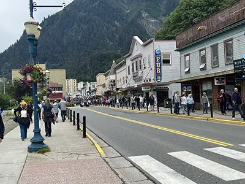
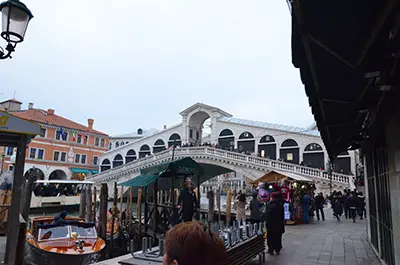

Cruises are a great way to plan a visit to coastal countries quickly. Cruises also provide lots of
resources to set up reputable land excursions.
Below is a gallery that shows the fun you can enjoy while on your cruise.
Gallery: Alaska
Cruize Room

Downtown Juneau Dog Sled Downtown Juneau Black Bear seen from bus Metal Elk Old Train Ketchikan from Cruise Ship View of port from ship Deck view of Ketchikan View of Juneau from ship deck
Gallery: Mediteranium
The Amalfi Coast, ItalyBoat PaintingCourt Church ĆipurChurch of St. Mathew, MontenegroCruise BedFamilia Sangrada Side ViewFamilia SangradaFountain of NeptuneItalian Pastry ShopPizza from MargheritaMargherita Ristorante PizzeriaMichelangelo's PietaMonumentPiazza Tower

Rialto Bridge VeniceSt. Peter BasilicaSt. Mark BasilicaRoma ColosiumSt. Paul CathedralVenice Italy SunsetRoma Temple The DavidVenice Italy
Gallery: Hawaii
Sunset from BoatWaterfall, MauiKauai Waterfall 2Party on BoatNesting TurtlesWailua TrailSwimming Turtle